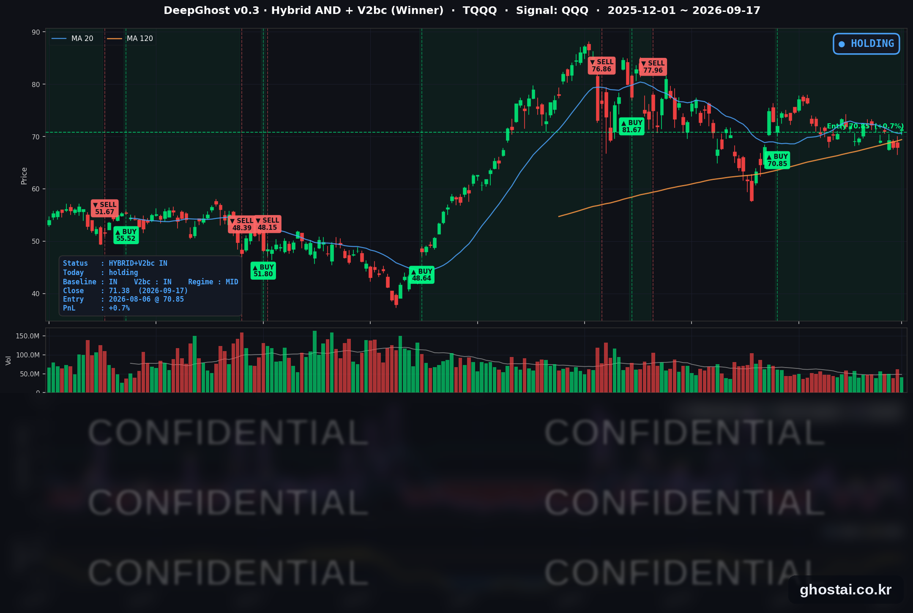

금리인상 충격 소화, 나스닥 급등
· Ghost.AI 데일리 리포트
👻 매일 시그널과 히스토리를 홈페이지에서 한눈에 → www.ghostai.co.kr
회원 페이지 안내 — 회원 가입하시면 커버리지 전 종목의 원본 시그널과 분석 레포트를 매일 확인하실 수 있습니다. 회원 페이지는 블로그·유튜브보다 먼저 업데이트됩니다. 선착순 100명을 모집하고 있으며, 이메일과 필명만으로 가입하실 수 있고 서비스 사용료는 받지 않습니다. 가입 신청 후 운영자 승인을 거쳐 이용하실 수 있습니다.
어제 금리 인상 후, 주가·금리·변동성이 전부 반대 방향으로 갔습니다. 10년물은 하루 만에 다시 5% 아래로 내려왔고 나스닥은 +1.69% 급등했습니다. 고용과 제조업 지표가 예상보다 좋았는데도 금리가 내렸다는 점이 오늘의 핵심입니다.
📊 오늘의 매매 신호
| 항목 | 내용 |
|---|---|
| 오늘 할 일 | ✅ 아무것도 안 해도 됩니다 |
| 포지션 상태 | 📈 TQQQ 보유 중 (IN POSITION) |
| 매수 진입일 | 2026-08-06 (30거래일째) |
| 진입가 → 현재가 | $70.85 → $71.38 |
| 현재 포지션 수익 | +0.75% |
TQQQ 시그널 — IN POSITION
현재 상태: 매수 포지션 유지 중 | 이번 포지션 수익률 +0.75%

나스닥100(QQQ)이 +1.73% 오르면서 TQQQ는 +5.08% 상승한 71.38달러로 마감했습니다. 전략의 평가손익은 전 거래일 -4.12%에서 +0.75%로 하루에 4.87%p 움직였습니다. 8월 6일 70.85달러에 진입한 뒤 오늘이 30거래일째이고, 평가손익이 플러스로 끝난 것은 9월 11일 이후 4거래일 만입니다. 이번 구간에서 가장 낮았던 날은 9월 15일(-4.16%), 가장 높았던 날은 8월 13일(+8.89%)이었습니다.
오늘 상승분의 대부분이 개장 전에 나왔다는 점 때문에 "속 빈 반등"이라는 평가가 많았습니다. 다만 과거 사례를 상승이 장 시작 전에 몰린 날과 정규장에서 나온 날로 나눠 봐도 이후 전개에는 뚜렷한 차이가 없었습니다. 구분이 생기는 쪽은 상승이 언제 일어났는지가 아니라, 그날 결국 올랐는지 여부였습니다.
오늘 미국 시장 — 시황 요약
지수 마감
| 지수 | 종가 | 등락률 |
|---|---|---|
| S&P 500 | 7,637.76 | +1.14% |
| 나스닥 종합 | 26,418.30 | +1.69% |
| 다우존스 | 51,778.04 | +0.61% |
| 러셀 2000 | 2,874.63 | +0.55% |
| QQQ (나스닥100) | 716.92 | +1.73% |
| TQQQ | 71.38 | +5.08% |
지수 전부가 올랐지만 올라온 경로는 서로 달랐습니다. 모두 전 거래일 종가보다 높게 출발했고, 정규장에서 그 상승분을 지킨 쪽과 돌려준 쪽이 갈렸습니다.
| 지수 ETF | 시초 갭 | 정규장 | 종가 등락률 |
|---|---|---|---|
| QQQ | +1.59% | +0.14% | +1.73% |
| SPY | +1.21% | -0.07% | +1.13% |
| DIA (다우) | +1.02% | -0.41% | +0.61% |
| IWM (소형주) | +1.42% | -0.89% | +0.51% |
소형주 ETF는 갭으로 얻은 1.42% 중 0.89%p를 장중에 돌려줬고, 갭을 지킨 뒤 조금 더 올린 것은 QQQ뿐이었습니다. FOMC 전날과 비교하면 차이가 더 분명합니다. QQQ는 +1.76%로 올라섰지만 다우는 아직 -0.60%로 회복하지 못했고, 러셀 2000은 +0.15%로 제자리입니다.
국채 금리 동향
| 만기 | 수익률 | 전 거래일 대비 |
|---|---|---|
| 3개월 | 3.965% | -0.5bp |
| 5년 | 4.801% | -5.8bp |
| 10년 | 4.947% | -5.9bp |
| 30년 | 5.296% | -5.3bp |
어제 2007년 이후 처음으로 5%를 넘겼던 10년물이 하루 만에 4.947%로 내려왔습니다. 3개월물만 제자리에 남고 5년·10년·30년이 나란히 5~6bp씩 내린 모양입니다. 단기 금리는 어제 결정된 정책금리 3.75~4.00%에 묶여 있고, 그보다 긴 구간은 앞으로의 물가와 성장 전망을 반영하기 때문입니다.
주목할 점은 지표가 좋았는데 금리가 내렸다는 것입니다. 주간 신규 실업수당 청구는 1만 건 줄어든 19만 6천 건으로 7월 이후 가장 낮았고, 필라델피아 연은 제조업 지수는 37.8로 예상치 30.5를 웃돌았습니다. 성장 기대가 꺾여서 금리가 내린 것이라면 나올 수 없는 조합입니다. 내려간 쪽은 성장 전망이 아니라 금리에 얹혀 있던 물가 몫입니다. 10년물과 3개월물의 차이는 103.6bp에서 98.2bp로 좁아져, 9월 들어 처음 100bp 아래로 내려왔습니다.
연준 발언 & 금리 패스
오늘 예정된 연준 인사의 공개 발언은 없었습니다. 대신 어제 케빈 워시 의장의 기자회견 내용이 하루 늦게 다르게 받아들여졌습니다. "인플레이션이 너무 높고 그 상태가 너무 오래됐다"는 발언이 어제는 추가 긴축 부담으로 읽혔는데, 오늘은 연준이 물가를 방치하지 않는다는 확인으로 받아들여졌습니다. 발언 내용은 그대로이고 해석만 바뀐 셈입니다. 긴축적인 중앙은행이 장기 물가 기대를 낮춘다는 것이 오늘 채권 시장의 판단이었고, 5년·10년·30년이 함께 내린 것이 그 기록입니다.
금리 경로 자체는 위로 고정돼 있습니다. 점도표에서 18명 중 16명이 연내 추가 인상을 예상했습니다. 다만 2027년은 갈렸습니다. 8명이 추가 인상, 6명이 동결, 4명이 인하를 봤습니다. 올해 방향에는 이견이 거의 없고 내년부터 의견이 나뉘는 구성입니다.
오늘의 핵심 이슈
-
매파적 인상이 신뢰 회복으로 다시 읽혔습니다. 어제는 금리를 올린 뒤 주가가 밀리고 10년물이 5%를 넘겼는데, 오늘은 셋이 전부 반대로 갔습니다. 나스닥 +1.69%, 10년물 -5.9bp, VIX -12.93%입니다.
-
유가 공급 차질 우려가 줄어든 것이 실제 동인이었습니다. 드론 공격으로 손상된 사우디 동서 송유관 때문에 유가가 올라 있었는데, 사우디가 오만 앞바다에서 선박 간 환적으로 물량을 우회시키면서 우려가 완화됐습니다. 유가가 내리면 물가 전망이 내려가고, 물가 전망이 내려가면 장기 금리가 내려가며, 장기 금리가 내려가면 성장주 밸류에이션 부담이 줄어듭니다. 주식과 채권이 함께 오른 것은 이 경로를 거친 결과입니다.
-
반도체가 지수를 끌었고, 상승분의 대부분은 개장 전에 나왔습니다. 반도체 종목들이 모두 QQQ를 앞섰지만, S&P 500은 +1.14% 중 +1.05%p가, 나스닥은 +1.69% 중 +1.54%p가 시초 갭이었습니다. 정규장에서 갭을 지키고 더 올린 것은 QQQ뿐이고, 소형주와 다우는 상당 부분을 돌려줬습니다.
변동성 & 투자심리
VIX는 17.71에서 15.42(-12.93%)로 크게 내렸습니다. 올해 거래일 가운데 낮은 축에 속하는 수준이고, 이번 달 평균 16.08과 비교해도 낮습니다.
반면 공포탐욕지수는 26~30의 "공포" 구간에 그대로 머물러 있습니다. 가격과 변동성은 위험 선호 쪽으로 돌아섰는데 심리 지표는 아직 따라오지 않았다는 뜻입니다. 오늘 상승분의 대부분이 개장 전에 나왔고 소형주와 다우가 장중에 되돌린 점도 같은 방향을 가리킵니다. 회복의 폭보다 회복이 어디에 몰렸는지를 보는 편이 지금은 더 유용합니다.
매크로 & 원자재
| 품목 | 종가 | 등락률 |
|---|---|---|
| WTI 원유 | $101.13 | -1.27% |
| Brent 원유 | $104.05 | -1.68% |
| 금 선물 | $4,382.60 | -0.11% |
유가는 이틀 연속 내렸고 장중에는 WTI가 99.10달러까지 닿았다가 되돌아왔습니다. 다만 우려가 줄었을 뿐 해소된 것은 아닙니다. 8월 말과 비교하면 WTI는 여전히 +17.9%, 브렌트는 +15.0% 높은 자리에 있고, 손상된 송유관 완전 복구에는 6주가량 걸린다는 것이 현재 알려진 일정입니다. 금 선물은 사실상 변화가 없었습니다.
주요 종목 동향
| 종목 | 종가 | 등락률 | 비고 |
|---|---|---|---|
| INTC | 108.80 | +7.67% | SK하이닉스 미국 메모리 위탁생산 논의 보도, 목표주가 상향, 10월 CPU 가격 인상 계획 |
| MU | 977.50 | +5.50% | 인도 조립·테스트 공장 상업 생산 개시. 9/30 분기 실적 발표 예정 |
| NVDA | 219.34 | +2.54% | 반도체 강세 동참, 상승분 대부분이 갭 |
| AVGO | 347.30 | +2.29% | 갭 +2.09%를 정규장에서 지켰습니다 |
| TSLA | 366.20 | +2.27% | 갭 +2.63% 중 일부 반납 |
| AMZN | 251.19 | +2.13% | 전 거래일 -0.99%를 되돌렸습니다 |
| QCOM | 188.71 | +2.09% | 커버리지 최대 갭(+2.98%)으로 출발, 장중 일부 반납 |
| MSFT | 497.75 | +1.52% | 전 거래일 -1.37%를 되돌렸습니다 |
| AAPL | 337.00 | +1.38% | 갭에 정규장 상승을 더했습니다 |
| META | 682.31 | +1.34% | 갭을 그대로 유지 |
| GOOGL | 347.33 | +1.30% | 갭 +1.69% 중 일부 반납 |
| NFLX | 75.31 | -1.44% | 커버리지에서 혼자 하락, 4거래일 연속 |
NFLX는 오늘 하루의 재료라기보다 7월 실적에서 가이던스가 기대에 못 미친 뒤 이어지는 흐름입니다. 지수와 커버리지 전반이 오른 날에 혼자 내린 점은 기록해 둘 만합니다.
다음 거래일 일정
- 9월 분기 옵션·선물 동시 만기 (9/18) — 만기 물량 정리로 거래량이 크게 늘고 장 막판 변동이 커지는 경향이 있는 날입니다. 방향성 해석에는 주의가 필요합니다.
- 산업생산·설비가동률 (8월분, 동부시간 오전 9시 15분) — 제조업 지표가 예상을 웃돈 직후라 확인이 필요한 구간입니다.
- 일본은행 9월 회의 마지막 날 — 결과가 엔화와 글로벌 금리에 영향을 줄 수 있습니다.
Ghost.AI — Quantitative AI Investment
Model: DeepGhost v0.3 | Transformer-Based Deep Learning
Coverage: 13 tickers | Updated every trading day after US market close
⚠️ 본 자료는 정보 제공 목적으로만 작성되었으며 투자 권유가 아닙니다. 모든 투자의 책임은 투자자 본인에게 있습니다. 과거 성과가 미래 수익을 보장하지 않습니다.
[유의사항]
- 본 서비스는 불특정 다수를 대상으로 발행되는 단방향 정보 제공 서비스이며, 투자자 개인의 재산 상황·투자 목적·위험 선호도를 반영한 개별 투자 조언이 아닙니다.
- 고스트에이아이 주식회사는 고객과 쌍방향 의사소통(개별 상담, 맞춤형 자문 등)을 제공하지 않습니다.
- 본 콘텐츠는 투자 권유 또는 매매 주문의 청약·청약의 권유에 해당하지 않으며, 최종 투자 판단 및 그에 따른 손익의 책임은 전적으로 투자자 본인에게 있습니다.
고스트에이아이 주식회사